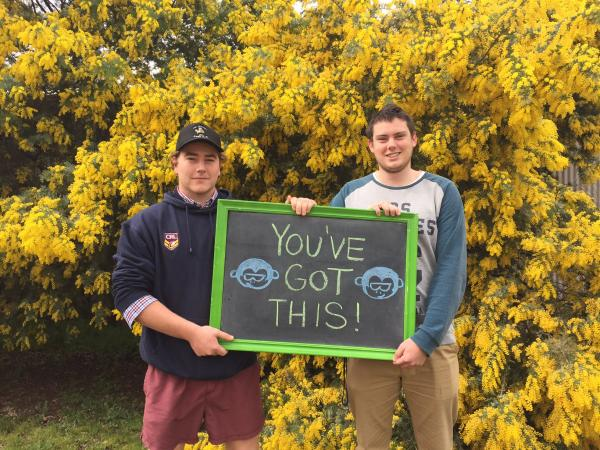

Understanding bullying – for families

What is bullying?
Bullying is a repeated verbal, physical, or social behaviour directed towards another person by one or more individuals over time. Typically this involves one person or a group of people exerting their power over others who are less powerful. For example, the bully may be stronger, have others to "back them up" or they may be socially manipulative.
Bullying takes many forms and can occur face-to-face or online such as verbal and/or physical abuse, deliberate cyber-stalking or sending hate email. It can also be less obvious, such as deliberately excluding others or spreading rumours. Cyber bullying is a form of bullying that uses technology such as text messages, email, and social networking sites such as Facebook, Instagram or YouTube to carry out the behaviour.
Bullying is not simply "part of growing up". It can have serious effects on a young person's physical and mental health, their school performance, as well as having negative effects on their families and the broader community. Not only can bullying cause serious harm but it is also common, with up to 46.8% of Australian secondary school students reporting they have been bullied in some form over the past 12 months.
Ways you can help
Family and friends can play a critical role in supporting young people involved in or experiencing bullying. Positive relationships can help protect young people from the negative consequences associated with being bullied2. Young people who are well supported by their parents report fewer depressive symptoms than those who receive little parental support, regardless of whether they are the ones bullying or are the target.
Ways you can support a young person
Let them know they are not alone. It may help them to know that a lot of other young people experience similar difficulties.
Make sure they are safe. Sometimes this may require taking action they are not happy with. Have a conversation with them if this might be the case.
Try to develop a trusting relationship and ask questions. Make sure the young person does not have to handle this situation by themselves.
Establish and maintain good communication. Ask open-ended questions and listen without judgment and without panicking.
Be involved. Show that you are interested in the young person's life, relationships and hobbies.
Be prepared to seek help. Help them decide how to approach the situation. Discuss who they could talk to at school, or in the workplace about the situation.
Provide reassurance. Emphasise that the bullying is not their fault and that they are not responsible for what is happening to them.
Support them to problem-solve. Work together to come up with as many sensible and helpful strategies as possible to try and control the bullying. This can increase their self-esteem and discourage strategies that are unlikely to be helpful (e.g. starting a fight).
Support them to make new friends and maintain existing friendships. Encourage them to spend time with others away from where the bullying is happening.
Build their confidence. Identify their strengths as well as things they enjoy and find ways to develop these, especially social activities. This can help them to feel good about other things in their lives.
Finding out if someone is being bullied
Knowing if someone is being bullied can be difficult; often parents and carers do not know, or underestimate its frequency or its severity. However, family and friends are often in a good position to notice changes in behaviour, mood and general wellbeing as well as early signs of mental and physical health issues. Not all young people will ask for help and it may take time for a young person to speak about their experiences.
If you suspect a young person close to you is being bullied, ask them about their situation. Remember to be respectful and understanding and that they may not necessarily feel like answering.
You can ask:
- Have you ever noticed kids at school calling each other names or hitting or pushing each other?
- What is lunchtime like at school? What do you do?
- Do you ever feel lonely at school or left out of activities? What happens and how do you feel?
- Do kids ever tease you? Talk about you behind your back? Hit you? Push you around? Say nasty things about you online? If so, that sounds really difficult, how are you coping with that? Do you think anyone else is aware that it's going on?
- It sounds like a really difficult situation. Do you think we could talk a bit more together to figure out how I might be able to best support you?
Be mindful that persistent questioning can be stressful for some young people and may make them less willing to talk. Encourage them to speak to someone they feel comfortable with and don't take it personally if they want to speak to someone other than yourself7.
Other things to consider
Keep supporting your young person and let them know what actions you are taking.
Documentation will be useful if the issue needs to be taken further (i.e. with the school, police or support services) so keep a record of events including when it occurred, who was involved, what happened, where did it happen, did anyone else see it happen, what type of bullying occurred (physical, verbal, cyber bulling?). Did anyone intervene? Has it happened before?
Get to know the websites and social networking tools that young people use and talk to them about how to use these safely.
If the bullying is occurring in or around the school, approach the school to discuss your concerns or seek advice on what to do. It may be helpful to discuss the process with your young person before you begin.
If you're concerned that your young person may need more help than you can provide, contact safespace.
Other useful websites
- Lifeline
- Kids Help Line
- Parent helplines (in every State and Territory of Australia) - Google "Parentline" along with your State or Territory
- Bullying No Way
- The Alannah and Madeline Foundation
- The Australian Psychological Society
- Cybersmart